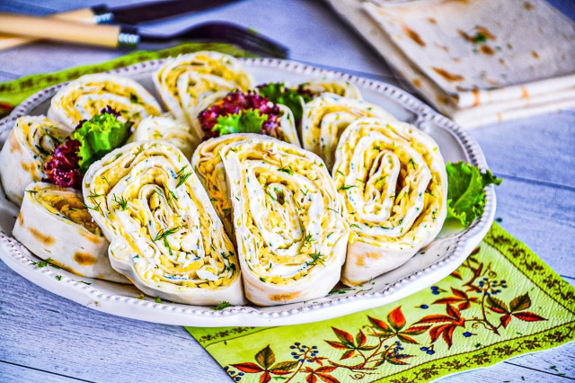

ООО "Русский дар" 
Вернутся в начальный раздел | Вернутся на главную страницу
Оборудование: нож, миска, крупная терка, холодильник, кастрюля и пищевая пленка.

Подготовьте все необходимые ингредиенты. Вам понадобится тонкий армянский лаваш (два листа). Как правильно выбрать лаваш? В первую очередь посмотрите дату изготовления на упаковке. Просроченную выпечку не берите. Свежий лаваш должен иметь приятный запах. Внимательно посмотрите, чтобы на нем не было пятен и признаков плесени.

Твердый сыр может быть любой. Главное, чтобы он был вкусным, свежим и ароматным. Натрите его на крупной терке. Заменить твердый сыр можно плавленым сыром типа «Дружба». Чтобы было удобнее натирать, подержите его 15-20 минут в морозилке.

Яйца хорошо помойте. Отварите вкрутую (около 8-10 минут после закипания). Слейте горячую воду и залейте холодной. Когда яйца остынут, вынимайте, очистите от скорлупы. Также крупно натрите на терке.

Помойте свежий укроп. Обсушите бумажными полотенцами. Измельчите. Помимо укропа можно брать петрушку, кинзу, рукколу.

В отдельную емкость выложите майонез. Если по какой-то причине майонез использовать вы не хотите, замените его сметаной. Смешайте с рубленой зеленью.

Разложите первый лист тонкого лаваша. Равномерно смажьте его поверхность тонким слоем майонеза с укропом. Отступите от краев 2-3 см и начинку на них не выкладывайте.

Сверху равномерно посыпьте поверхность тертыми яйцами.

Первый лаваш накройте вторым листом. Также смажьте его майонезом и посыпьте твердым сыром.

Как правильно свернуть лаваш рулетом? Сворачивайте аккуратно и как можно плотнее, чтобы начинка не вываливалась по краям, а сам лаваш не порвался. Если рулет не свернуть плотно, потом будет сложно нарезать его на красивые куски.

Заверните рулет в пищевую пленку. Положите в холодильник на один час. За это время он хорошо пропитается и станет мягким. Готовый рулет разрежьте на порционные ломтики и подайте к столу.

Шаг 1, Шаг 2, Шаг 3, Шаг 4, Шаг 5, Шаг 6, Шаг 7, Шаг 8, Шаг 9, Шаг 10.